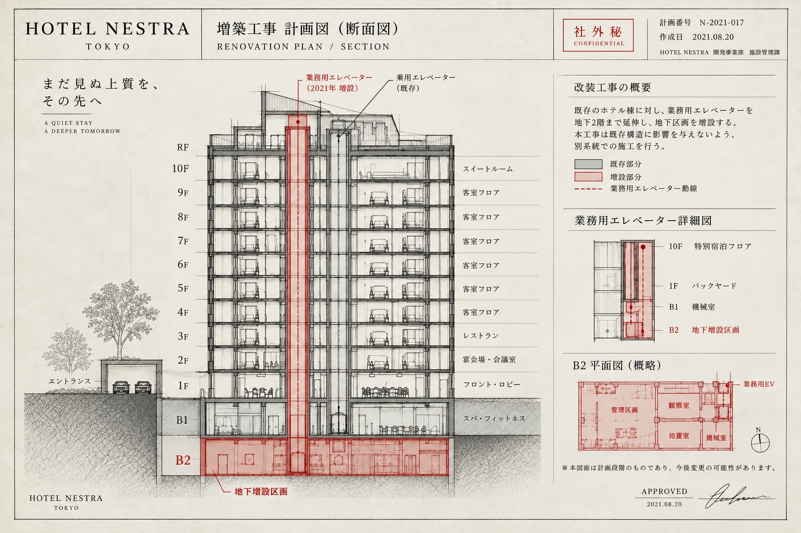
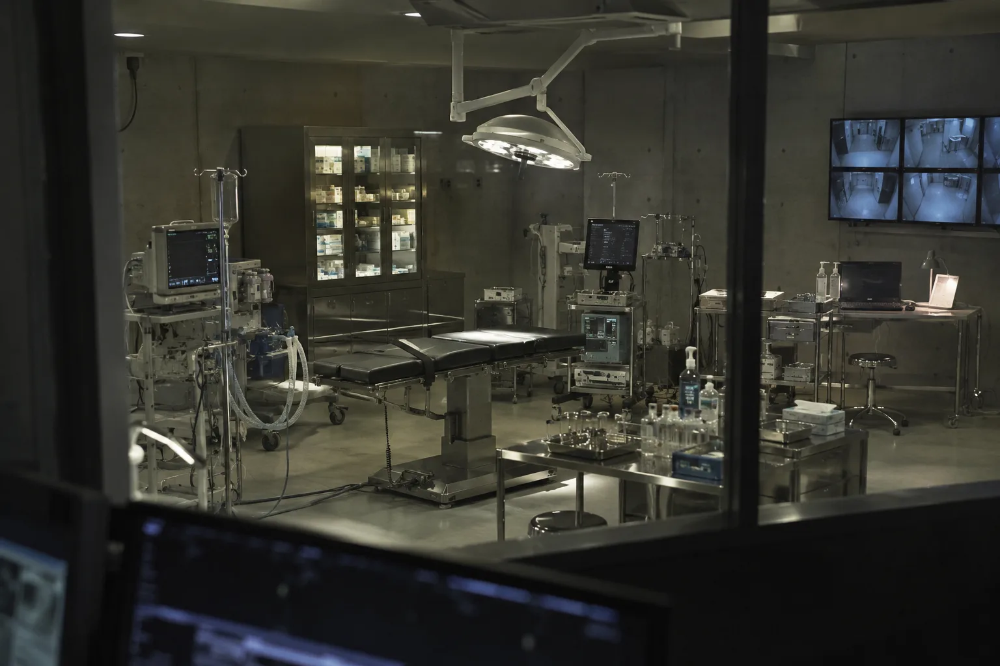
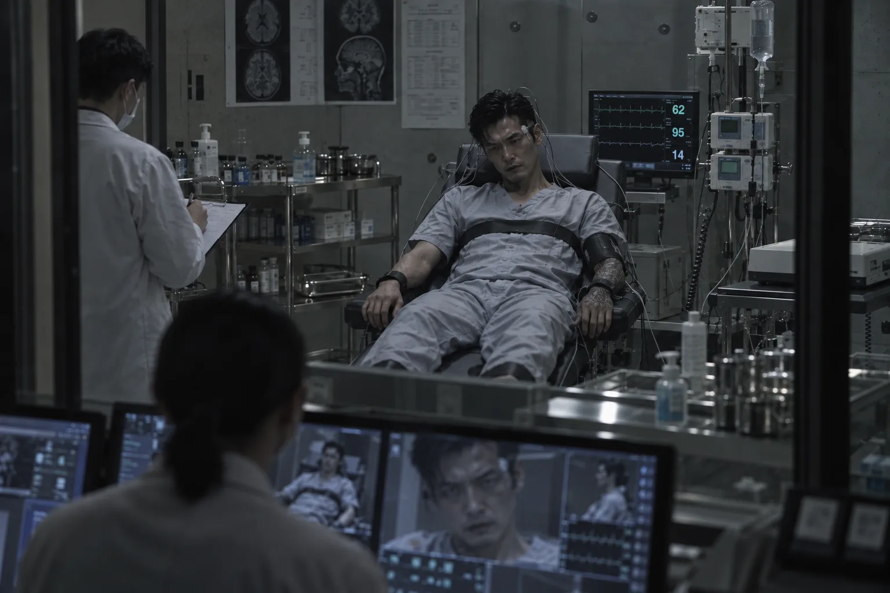
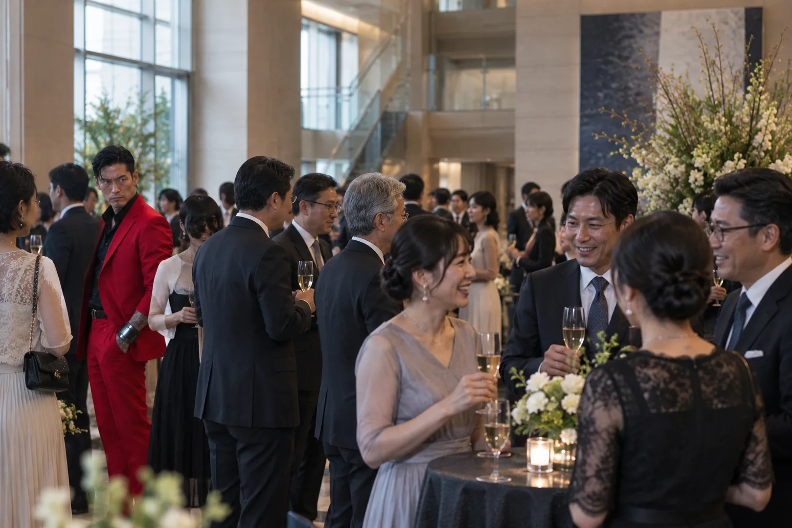
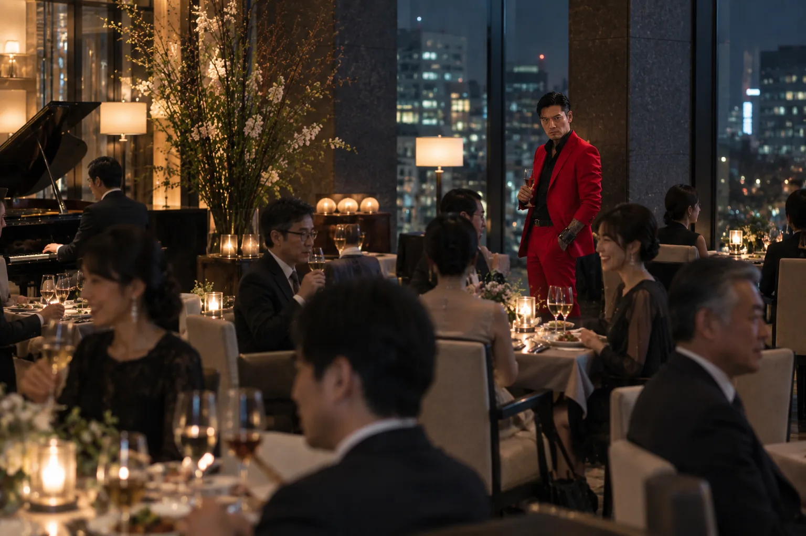

本人申請
外部追跡の回避、所属関係からの離脱、身元変更を本人が希望すること。
HOTEL NESTRA / INTERNAL DOCUMENTS
旧身元情報は契約成立後、通常顧客台帳から破棄・分離すること。





公開イベント記録と同時に、対象の外観・行動・端末装着状態を定期記録。
| 機能 | 取得・動作内容 |
|---|---|
| 位置情報取得 | 館内ビーコンによる所在区画記録 |
| 生体情報取得 | 脈拍・体温・装着状態の常時取得 |
| 区域外移動検知 | 指定区域外への移動を管理端末へ通知 |
| 取り外し検知 | 固定部の開放・破損を即時記録 |
| 24時間監視 | 位置・生体ログを対象記録へ連続保存 |
| 緊急時処置 | 管理指示に基づく薬剤投与機構を作動 |
22:28:04 対象031／指定区域外移動を検知
22:28:06 固定状態：維持
22:29:12 緊急時処置系統：遠隔待機
外部追跡の回避、所属関係からの離脱、身元変更を本人が希望すること。
既存契約者、指定仲介者または提携者による紹介案件を受入対象へ追加。
外部依頼元が所在秘匿を求める案件について、本人申請の有無を問わず個別審査を可能とする。
長期観察条件への適合を優先し、失踪意思を確認できない場合も受入候補として登録する。
HN-10F-031R-031N-2021-017B2-RD-04HN-LS-REV4TR-031-05